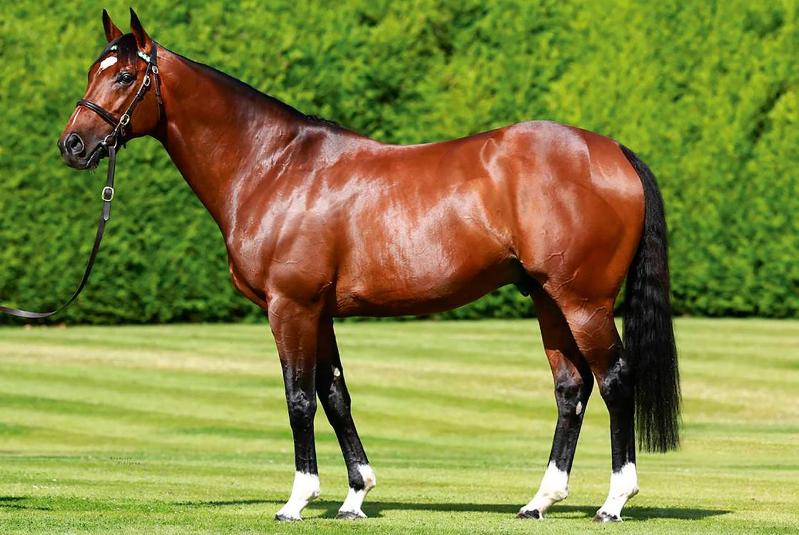

Frankel, el invicto que redefinió la excelencia del galope moderno
Catorce victorias en catorce salidas. Una cifra redonda y aterradora a la vez, porque ningún caballo de su nivel había cerrado nunca una carrera deportiva sin la sombra mínima de una derrota. Frankel, nacido el 11 de febrero de 2008 en Banstead Manor Stud, lo consiguió, y al hacerlo se convirtió en el referente con…

Catorce victorias en catorce salidas. Una cifra redonda y aterradora a la vez, porque ningún caballo de su nivel había cerrado nunca una carrera deportiva sin la sombra mínima de una derrota. Frankel, nacido el 11 de febrero de 2008 en Banstead Manor Stud, lo consiguió, y al hacerlo se convirtió en el referente con el que se mide cualquier mito posterior del turf europeo.
Hijo de Galileo y de la yegua Kind, por Danehill, llegó a las manos del veterano Sir Henry Cecil, que vivió en aquel potro una segunda primavera tras años de lucha personal con la enfermedad. Desde Warren Place, en Newmarket, Cecil fue trazando una hoja de ruta que combinaba prudencia y ambición: debut en agosto de 2010, victoria en el Royal Lodge, oro en el Dewhurst Stakes y un 2.000 Guineas de Newmarket en 2011 ganado por seis cuerpos que dejó sin habla a la tribuna. Tom Queally, su jockey constante, no necesitó ni siquiera enseñar la fusta.
Lo que vino después fue una sucesión de actuaciones que el público inglés llegó a esperar como rituales. El Queen Anne Stakes de Royal Ascot 2012, que ganó por once cuerpos sobre rivales de Grupo I, sigue siendo una de las grabaciones más vistas del turf británico. Aquel verano firmó también los Sussex Stakes —su segundo consecutivo en Goodwood— y el Juddmonte International de York, donde aceptó por primera vez la distancia de diez furlongs. Su carrera se cerró el 20 de octubre de 2012 con el Champion Stakes de Ascot, en un día gris y embarrado que añadió épica al adiós. Timeform le otorgó un rating de 147, el más alto jamás concedido en sus más de setenta años de existencia.
El segundo capítulo de la historia, el de semental, empezó en 2013 en el propio Banstead Manor, dentro del operativo Juddmonte del jeque Khalid Abdullah. Su libro inicial se cubrió a 125.000 libras, una cifra ya elevada que la demanda terminaría llevando hasta tarifas mucho mayores en torno al cuarto de millón. Los frutos no tardaron: Cracksman (Champion Stakes 2017 y 2018), Adayar (Derby de Epsom 2021), Hurricane Lane (Irish Derby y St Leger 2021), Logician (St Leger 2019), Anapurna y Soul Sister (Oaks de Epsom 2019 y 2023), Westover (Irish Derby 2022), Mostahdaf (Juddmonte International 2023) y Chaldean (2.000 Guineas 2023) componen una nómina que muy pocos sementales contemporáneos pueden exhibir.
El peso específico de Frankel en la cría británica e irlandesa va más allá de los números. Su descendencia ha demostrado versatilidad de distancias, una rareza dentro de la línea Sadler's Wells de la que procede, y compite de tú a tú con el legado vivo de su padre Galileo, fallecido en 2021. En cada subasta de yearlings de Tattersalls o Goffs los hijos de Frankel siguen marcando récords, y en cada temporada europea su nombre vuelve al árbol genealógico de algún ganador clásico. Catorce victorias, ningún rival capaz de doblegarle y una huella en la cría que, más de una década después de su retirada, sigue creciendo. Pocas leyendas del galope moderno pueden contar la misma historia.
Notas sobre vídeo
- No se incluye iframe de YouTube en esta pieza para no inventar el ID. Las carreras canónicas de Frankel (Queen Anne 2012, Champion Stakes 2012) están subidas al canal oficial de Royal Ascot / Ascot Racecourse en YouTube, y al canal de Racing Post, pero no he verificado URL exacta. Si el revisor humano localiza el embed oficial del Queen Anne Stakes 2012 (11 cuerpos), encaja perfectamente; si no, mejor publicar sin vídeo que con uno equivocado (regla anti-invención sagrada).
— Redacción de Galope al Día